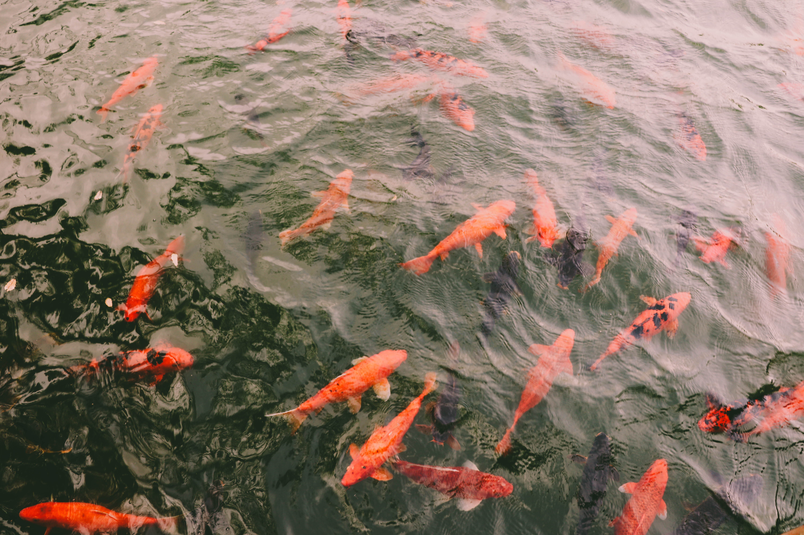

In this project, people can discover the beauty of nature as I see it—through plants, landscapes, fishes, and all the details I capture during my walks and trips. I focus on the small things and the big views, from quiet forest paths to rivers full of life.
Every photo is a reflection of how I connect with nature: with curiosity, patience, and respect. I aim to show the textures, colors, and moods that make each place unique. Whether it's a leaf, a mountain, or a school of fish, I try to turn every moment into something that makes people stop, look, and feel.